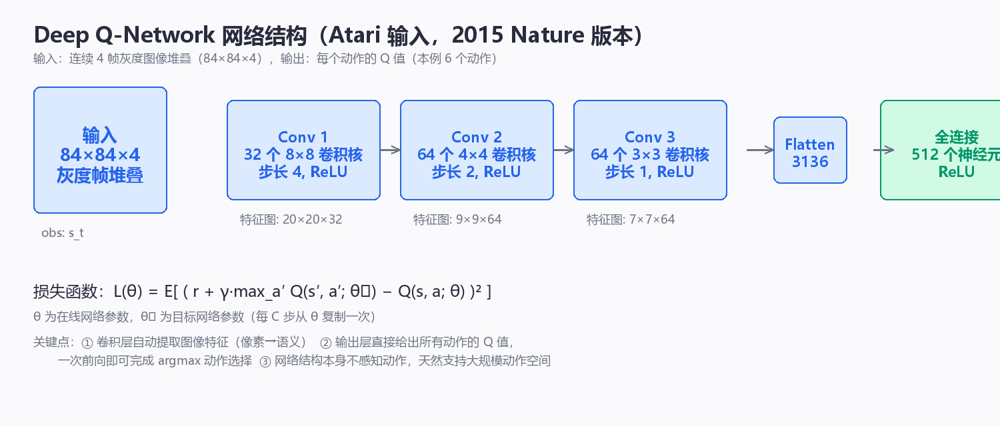

Value-Based Methods
价值学习不直接输出"应该做什么"，而是先学习每个动作的长期价值，再从价值中选动作。Q-Learning 是最典型的表格方法，DQN 则把同一思想扩展到高维状态。
这一章的主线是：先用一步自举目标把 Bellman 期望关系变成可在线更新的 TD 估计，再把它换成带 \(\max\) 的最优形式得到 Q-Learning；接着处理两个必然出现的工程问题——数据不足（探索）与状态太多（函数逼近），最后分析 \(\max\) 运算带来的系统性过估计以及 Double DQN 的解法。每个环节都给出更新式、数值影响与失效模式。
TD 学习与自举目标
如果直接用完整回报 \(G_t\) 更新 \(V(s_t)\)，必须等未来真正发生：
TD 的做法是只走一步，就用当前估计构造目标：
TD 误差为
然后更新
它一半来自真实采样，一半来自自己的估计，因此称为 bootstrapping（自举）。优点是可以在线更新，代价是目标本身也在变化。更一般地，可以走 \(n\) 步再自举：
\(n=1\) 即标准 TD，\(n\to\infty\)（走到回合结束）即 Monte Carlo。把不同 \(n\) 的估计按几何权重 \(\lambda\) 平均，就得到 TD(\(\lambda\)) 的 \(\lambda\)-return
| 量 | 定义位置 | 含义 | 单位 |
|---|---|---|---|
| \(\alpha\in(0,1]\) | 更新式 | 每次把估计向目标推进的比例 | 无量纲 |
| \(\delta_t\) | TD 误差 | 目标与当前估计之差 | 与奖励同量纲 |
| \(y_t\) | TD 目标 | 一步奖励 + 折扣后的下一状态估计 | 与奖励同量纲 |
| \(n\) | \(n\) 步回报 | 自举之前实际走多少步 | 步 |
两个具体的数值感受：若 \(\alpha=0.1\)，一次更新只移动 \(10\%\) 到目标；在 \(\gamma=0.99\) 的任务里，若 \(V(s_{t+1})\) 恰好偏高 \(5\)，则 \(\delta_t\) 偏大约 \(0.99\times5=4.95\)，一次更新就把 \(V(s_t)\) 抬高约 \(0.495\)。误差通过自举被前向传播，这就是 TD 偏差的来源，也是它需要目标网络的原因。
时间差分与蒙特卡洛的偏差—方差权衡
这两种目标的差别只有一个：期望在哪里被截断。
MC 用整条轨迹的真实奖励，完全不用 \(V\)，所以对 \(V^\pi(s_t)\) 是无偏估计；代价是 \(G_t\) 为 \(T-t\) 个随机奖励的加权和，方差随视界增长。TD 用一个估计值代替了剩下的全部随机性，方差被压到大约单步水平，但只要 \(V\) 有偏差，目标就带着偏差。
| 维度 | Monte Carlo | TD(0) |
|---|---|---|
| 更新目标 | \(G_t\)（实际回报） | \(r_{t+1}+\gamma V(s_{t+1})\) |
| 是否自举 | 否 | 是 |
| 偏差 | 无偏（对 \(V^\pi\)） | 有偏，偏差正比于 \(V\) 的逼近误差 |
| 方差 | 高，约 \(O(T-t)\) 量级 | 低，约单步奖励方差 |
| 能否在线/增量更新 | 不能，需等回合结束 | 能，每步都可更新 |
| 持续型任务（无终止） | 无法使用 | 可直接使用 |
| 达到同一误差所需样本 | 通常多，回合越长越明显 | 通常少 |
| 对初始值的敏感度 | 低 | 高（初始 \(V\) 的偏差立即传播） |
| 典型场景 | 回合短、奖励只在终点、需无偏评估 | 回合长或无终止、在线控制 |
一个常用的定量直觉：设单步奖励方差为 \(\sigma^2\)、折扣 \(\gamma\)，MC 目标方差约为 \(\sigma^2\frac{1-\gamma^{2(T-t)}}{1-\gamma^2}\)，当 \(\gamma=0.99\)、视界 \(100\) 步时约为 \(50\sigma^2\)；TD(0) 的方差约为 \(\sigma^2\) 量级。反过来，若 \(V\) 的相对误差为 \(\eta\)，TD 目标偏差量级约为 \(\gamma\eta V\)，在 \(\gamma=0.99\) 时几乎原样传给下一步。
使用建议很明确：回合短且奖励稀疏 → MC 或大 \(n\)；回合长、需要在线 → 小 \(n\)；不确定时用 \(n\) 或 \(\lambda\) 作可调开关，一般 \(n\) 取 3～20 或 \(\lambda\) 取 0.9～0.99 能兼顾两者。 失败模式也有特征：MC 表现为"学习曲线方差大、同一策略两次评估差很多"；TD 表现为"曲线平滑但收敛值明显偏离真实回报，且在覆盖不足的状态区域偏差最大"。
Q-Learning 更新
Q-Learning 用最优下一动作构造 TD 目标：
更新为
把更新拆开看更清楚：
当前估计回答"现在认为这个动作值多少"，目标值混合了即时奖励与下一状态的最优估计，二者之差决定应该上调还是下调。
这里最容易混淆的是：执行时可以探索，学习目标仍然使用下一状态的最大 Q 值。这就是它被称为 off-policy 的原因之一——被更新的动作 \(a_t\) 可以来自任何行为策略（如 \(\varepsilon\)-greedy），而目标始终假设下一步按贪心行动。对比之下，SARSA 把目标写成本步实际选择的下一动作：
它是 on-policy 的，因此会学到"在探索噪声下安全"的策略，而 Q-Learning 学到的是"若之后不再乱探"的最优策略。
| 维度 | Q-Learning | SARSA |
|---|---|---|
| 目标 | \(r+\gamma\max_{a'}Q(s',a')\) | \(r+\gamma Q(s',a')\) |
| 类型 | off-policy | on-policy |
| 能否用回放缓冲训练 | 可以 | 不可以（需当前策略数据） |
| Cliff-Walking 上的行为 | 学最优贴边路径，探索期容易掉下去 | 学离边缘更远的保守路径 |
| 收敛条件 | 所有状态动作对持续被访问，\(\alpha\) 满足 Robbins-Monro | 策略逐渐贪心化（GLIE） |
探索机制
如果每次都选择当前 \(Q\) 最大的动作，早期一次错误估计可能让其他动作永远得不到尝试。
最常见的入门方法是 \(\varepsilon\)-greedy：
探索解决"没有数据"的问题，价值更新解决"如何利用数据"的问题。两者不要混在一起理解。
在经典有限表格设定下，Q-Learning 的收敛需要包括状态—动作对持续被访问、合适的学习率序列和稳定 MDP 等条件；"用了 Q-Learning"本身并不自动保证收敛。
| 探索方式 | 选择规则 | 优点 | 主要问题 |
|---|---|---|---|
| \(\varepsilon\)-greedy 常数 \(\varepsilon\) | 以固定概率随机 | 简单、稳定 | 永不停止随机，\(\varepsilon=0.1\) 时约 \(10\%\) 决策被浪费 |
| 衰减 \(\varepsilon\) | \(\varepsilon_t=\varepsilon_0/(1+t/T)\) | 满足 GLIE 条件，可收敛到最优 | 衰减过快过早锁定、过慢收敛太迟 |
| 乐观初始化 | 初始 \(Q\) 设为上界 | 自然驱动试错，无额外随机 | 只在离散、可枚举动作下可控 |
| UCB | \(a=\arg\max_a\left[Q(s,a)+c\sqrt{\frac{\ln N(s)}{N(s,a)}}\right]\) | 不确定性显式进入决策 | 需计数，连续空间不适用 |
| Boltzmann | \(P(a)\propto\exp\left(Q(s,a)/\tau\right)\) | 按价值差距平滑分配概率 | 温度 \(\tau\) 需调，\(Q\) 尺度变化时失效 |
| 不确定度奖励 | \(r'=r+\beta\,\hat u(s,a)\) | 可用于连续状态，与网络兼容 | 不确定度估计本身很难校准 |
一个容易忽略的量化事实：在动作数 \(m=10\) 的集合里，\(\varepsilon=0.1\) 意味着约 \(1\%\) 的决策是"随机恰好选中了贪心动作"，另外约 \(9\%\) 是纯浪费。若单个样本采集成本高（真机），更合理的是按信息增益决策，而不是固定比例随机。
| 失败模式 | 现象 | 原因 | 缓解 |
|---|---|---|---|
| 过早收敛 | 策略长时间不变且性能远低于预期 | \(\varepsilon\) 衰减太快、初始 \(Q\) 太高 | 延长探索期、乐观初始化 |
| 无法收敛 | Q 值持续抖动 | \(\varepsilon\) 固定且过大，目标始终跳变 | 让 \(\varepsilon\to0\)，或用平均化策略 |
| 局部探索 | 只在少数状态反复试 | 状态分布由当前策略决定，未访状态永不更新 | 状态覆盖初始化、内在奖励 |
| 探索与安全冲突 | 试错本身造成不可接受损失 | 随机动作直接作用于真实系统 | 安全层、动作屏蔽、离线预训练 |
表格方法的适用边界
假设状态由 20 个连续量组成，就不可能给每种状态都单独存一个 Q 表条目。更重要的是，彼此相近的状态本应共享经验。
因此把表格替换为参数化函数：
神经网络的价值不只是"容量大"，而是能在相似输入之间形成泛化。

泛化的代价是估计之间不再独立：更新一个状态动作对的 \(Q\) 值会同时改变邻近状态的值。这在两种情况产生严重问题——状态动作对之间的耦合使自举目标不稳定（致命三要素：函数逼近 + 自举 + off-policy），以及在覆盖稀疏的区域，网络输出没有任何数据约束，只是外推。
| 状态规模 | 表格是否可行 | 内存量级（每项 4 字节） | 结论 |
|---|---|---|---|
| \(\lvert\mathcal S\rvert=10^2,\ \lvert\mathcal A\rvert=4\) | 可行 | 约 \(1.6\) KB | 直接用表格 |
| \(\lvert\mathcal S\rvert=10^4,\ \lvert\mathcal A\rvert=10\) | 勉强 | 约 \(400\) KB | 可用但样本效率低 |
| \(\lvert\mathcal S\rvert=10^6,\ \lvert\mathcal A\rvert=10\) | 不可行 | 约 \(40\) MB，且几乎每项只被访问一次 | 必须函数逼近 |
| 连续状态 \(s\in\mathbb R^{20}\) | 不可行（连续统） | 无穷 | 必须函数逼近 |
| 连续状态但只有 3 个离散选项 | 不可行 | 无穷 | \(Q(s,a;\theta)\) 且 \(a\) 可枚举，仍是价值方法 |
这里有一个经常被忽略的判断：动作维度决定用不用价值方法，状态维度决定用不用神经网络。 状态连续但动作离散，DQN 依然是最自然的选择；动作连续，即使状态只有 2 维，\(\arg\max_a Q(s,a;\theta)\) 也会变成每步一次非凸优化。
DQN 的 Bellman 目标
DQN 的目标没有变，只是 Q 值由网络输出：
在线网络参数是 \(\theta\)，目标网络参数是 \(\theta^-\)。训练损失可以写成
注意梯度只对 \(\theta\) 求，目标里的 \(\theta^-\) 被视为常数：
这正是"半梯度（semi-gradient）"的含义——目标依赖 \(\theta^-\) 而不是当前 \(\theta\)，所以它并不是完整平方误差的梯度。半梯度让更新方向偏向"把预测拉向一个移动的靶子"，而不是同时调整靶子，这对稳定性至关重要。
| 组件 | 数学形式 | 作用 | 去掉后的现象 |
|---|---|---|---|
| 在线网络 \(\theta\) | \(Q(s,a;\theta)\) | 输出当前预测 | 无预测可用 |
| 目标网络 \(\theta^-\) | \(Q(s',a';\theta^-)\) | 提供较稳定的目标 | 目标随参数同步移动，训练震荡或发散 |
| 回放缓冲 \(B\) | \((s,a,r,s')\) 集合 | 打破样本时间相关性 | 连续样本强相关，梯度方向偏、灾难性遗忘 |
| 平方损失 | \((y-Q)^2\) | 回归 Bellman 目标 | 等价于改用其它损失拟合同一目标 |
| Huber 损失 | 小误差二次、大误差线性 | 抑制离群 TD 误差 | 个别大 \(\delta\) 主导更新，训练不稳 |
一个重要事实：DQN 的收敛性没有严格保证。 函数逼近 + 自举 + off-policy 三者同现时，即使目标稳定，也可能出现价值函数发散。回放与目标网络是显著改善稳定性的工程手段，不是收敛性的证明。
经验回放与目标网络
这两个结构解决的问题完全不同，却常被混为一谈。
经验回放解决"样本相关性与数据利用率"。在线交互得到的相邻样本高度相关，直接用它们做批量梯度下降，等价于在一个极窄的数据分布上反复更新，梯度期望被严重偏置。把转移 \((s_t,a_t,r_{t+1},s_{t+1})\) 存入容量为 \(N\) 的缓冲，再均匀随机抽样：
抽样得到的批内样本近似独立，梯度是期望的无偏估计，同时每条转移可被复用多次。
目标网络解决"目标随参数移动"。若用同一个 \(\theta\) 生成预测与目标，那么把 \(Q(s,a;\theta)\) 抬高的同时 \(y\) 也被抬高，更新会追自己的尾巴，极易正反馈发散。用一份延迟参数产生目标，就把它变成短期内近似固定的回归问题。两种常见同步方式：每 \(C\) 步硬拷贝 \(\theta^-\leftarrow\theta\)（DQN 原版，\(C\) 取数千），或软更新
| 问题 | 现象 | 由谁解决 | 机制 | 副作用 |
|---|---|---|---|---|
| 样本时间相关 | 梯度方向偏、对最近数据过拟合 | 经验回放 | 随机抽样打破相关性 | 需大内存，旧数据可能与当前策略无关 |
| 目标随参数移动 | 损失震荡、Q 值发散 | 目标网络 | 延迟参数提供稳定靶子 | 目标滞后，收敛所需墙钟时间变长 |
| 目标方差大 | 学习慢、曲线毛刺多 | 大批量 + \(n\) 步目标 | 平均多个样本、减少自举次数 | \(n\) 太大退化为 MC，方差回升 |
| 关键样本被淹没 | 稀有高 TD 误差样本几乎抽不到 | 优先采样 | 按 \(\lVert\delta\rVert\) 加权抽样 | 引入分布偏差，需重要性权重校正 |
| 内存或算力受限 | 缓冲太小、目标同步太频繁 | 联合调 \(N\) 与 \(C\) | 小 \(N\) 需大 \(C\)，大 \(N\) 可小 \(C\) | 两者都影响稳定性，需同时调节 |
典型数量级参考：回放缓冲容量 \(N\) 从 \(10^5\) 到 \(10^6\) 条转移（每条含两个状态向量，图像输入下内存是主要瓶颈）；批大小取 \(32\sim256\)；目标网络硬同步周期 \(C\) 取 \(10^3\sim10^4\) 步，软更新系数 \(\tau=0.001\) 对应约 \(1000\) 步的有效同步周期。
它们不能从理论上保证深度 Q-Learning 一定收敛，但显著改善了实际训练稳定性。
价值方法的适用范围
价值方法特别适合离散动作：例如左/右/前进/停止，或有限个策略选项。得到 \(Q(s,a)\) 后，只需比较各动作价值即可决策。
如果动作本身是连续值，例如转向角、力矩、速度，直接枚举 \(\arg\max_a Q(s,a)\) 会变困难，这时策略方法通常更自然。
| 动作空间 | 每状态需输出多少个数 | \(\arg\max\) 代价 | 推荐路线 |
|---|---|---|---|
| 离散 \(m\le 10\) | \(m\) | \(O(m)\)，可忽略 | 价值方法（DQN / Double DQN） |
| 离散但大（\(m=10^3\) 以上） | \(m\) | 每步一次线性扫描，尚可 | 价值方法 + 动作嵌入 |
| 多维离散（\(k\) 维各 10 个取值） | \(10^{k}\) | 组合爆炸 | 因子化 Q、策略方法 |
| 连续一维 \(a\in[-1,1]\) | 需离散成 101 个点 | 精度与维度不可兼得 | 策略方法 |
| 连续多维 \(a\in\mathbb R^6\) | 不可枚举 | 每步一次非凸优化 | 策略方法（PPO / SAC） |
所以从 Q-Learning 到 DQN 最需要记住的不是算法名字，而是一条主线：
Bellman target → TD error → 价值更新 → 用价值选择动作。
价值方法的另一个隐性边界是行为策略问题：off-policy 目标配合 \(\max\) 与函数逼近，会同时在两个方向上偏离真实值——决策时选中高估动作，学习时又依赖那些动作没有被充分执行过的数据。这直接导向下一节。
最大化偏差与过估计
当目标使用多个含噪价值估计的最大值时，取最大操作更容易选中偶然偏高的估计，从而产生系统性过估计。Double Q 思想把动作选择与动作评价部分分离，用来减弱这种偏差。它说明稳定训练不仅取决于损失函数，也取决于目标如何构造。
一个精确的结论是：设真实值 \(Q\) 与估计 \(\hat Q_i=Q_i+\epsilon_i\)，其中 \(\epsilon_i\) 零均值、同方差 \(\sigma^2\) 且相互独立，对 \(m\) 个动作取最大值，则
偏差在真实值接近相等时最严重，量级随 \(\sigma\) 与动作数 \(m\) 增大：\(m=2\) 时约 \(0.56\sigma\)，\(m=10\) 时约 \(1.54\sigma\)，\(m=100\) 时约 \(2.5\sigma\)。动作越多，\(\max\) 的过估计越重，这解释了为什么在动作空间较大时 Q-Learning 常常整体上偏乐观。
| 动作数 \(m\) | 近似过估计（以 \(\sigma\) 为单位） | 后果 |
|---|---|---|
| \(2\) | \(0.56\) | 轻微，一般可忽略 |
| \(4\) | \(1.03\) | 在 \(\gamma\) 接近 1 时会被自举放大 |
| \(10\) | \(1.54\) | 明显偏乐观，策略倾向冷门动作 |
| \(100\) | \(2.5\) | 严重，常伴发散 |
过估计的机制与 Double DQN
过估计不是噪声偶然造成的，而是 \(\max\) 这个非线性运算的结构性后果：\(Q\) 估计若在某动作处偶然偏高，\(\max\) 会优先选它，而这个"高"不会再被平均掉——数据只会把它写进目标，下一次更新进一步抬高它。更糟的是，偏高值还会通过自举向前传播。
Double DQN 的改法只有一步：把"选动作"和"评价动作"分开用两个网络完成。
关键在于用在线网络 \(\theta\) 选动作、用目标网络 \(\theta^-\) 评价该动作。两个网络的估计误差若互不相关，"选错的那个高估"在评价时就不会被同样的误差再次抬高，偏差显著减小。
| 版本 | 目标公式 | 选择动作 | 评价该动作 | 偏差方向 |
|---|---|---|---|---|
| Q-Learning / DQN | \(r+\gamma\max_{a'}Q(s',a';\theta^-)\) | \(\theta^-\) | \(\theta^-\) | 系统性高估 |
| Double Q-Learning | \(r+\gamma Q(s',a^*;\theta_2)\)，\(a^*=\arg\max Q(\cdot;\theta_1)\) | 网络 1 | 网络 2 | 大幅减小 |
| Double DQN | \(r+\gamma Q(s',a^*;\theta^-)\)，\(a^*=\arg\max Q(\cdot;\theta)\) | 在线网络 \(\theta\) | 目标网络 \(\theta^-\) | 大幅减小，几乎零额外开销 |
| 平均 DQN | \(r+\gamma\frac{1}{K}\sum_k Q(s',a^*;\theta^-_k)\) | 主网络 | 多个目标网络平均 | 更好，但内存与算力 \(K\) 倍 |
Double DQN 的代价几乎为零：不增加参数、不增加前向次数（本来就要对 \(s'\) 算一次 \(Q\)），只是换了 \(\arg\max\) 的来源网络。效果上，在原论文的 Atari 基准里，把 DQN 换成 Double DQN 后，多个游戏的价值估计曲线从系统性高估变为接近真值，评分中位数有可观提升；而在动作数较少的任务中改进不明显——这符合理论预期：过估计偏差随动作数增大，动作少的环境本来就没多少空间可改。
还需要注意三个与过估计相关的失效模式：
| 现象 | 真正的原因 | 错误归因 | 处理 |
|---|---|---|---|
| Q 值整体缓慢上升且超出上界 \(\frac{R_{\max}}{1-\gamma}\) | \(\max\) 偏差 + 自举传播 | "探索不足" | Double DQN、减小 \(\gamma\)、检查回报上界 |
| 策略只选少数动作、性能停滞 | 高估集中在未充分尝试的动作上 | "网络容量不够" | 增加覆盖、优先回放、Double DQN |
| Q 值突然发散 | 半梯度 + 函数逼近 + off-policy 的致命三要素 | "学习率太大"（可能只是表象） | 目标网络、梯度裁剪、减小 \(\alpha\) |
| 训练集内表现好、评估差 | 过估计在数据稀疏区域最大 | "过拟合" | 分离评估环境、多随机种子、保守估计 |
由此可见，价值方法的核心张力贯穿整章：\(\max\) 让我们能用价值直接得到策略，同一件事也让估计系统性偏高；自举让在线学习成为可能，同一件事又让误差不断向前传播。 第三章的策略梯度正是部分绕开这两个问题的另一条路线。
下一步：继续阅读 03-policy-actor-critic.md，看如何用优势函数 \(A(s,a)\) 与 GAE 替代 \(\max\) 与自举目标的组合；Bellman 目标与 \(Q^*\) 的完整推导见 01-mdp-bellman.md；当数据完全无法在线采集时，参见 06-safe-robust-offline.md；连续控制场景的对照做法见 ../control-theory/04-lqr.md。